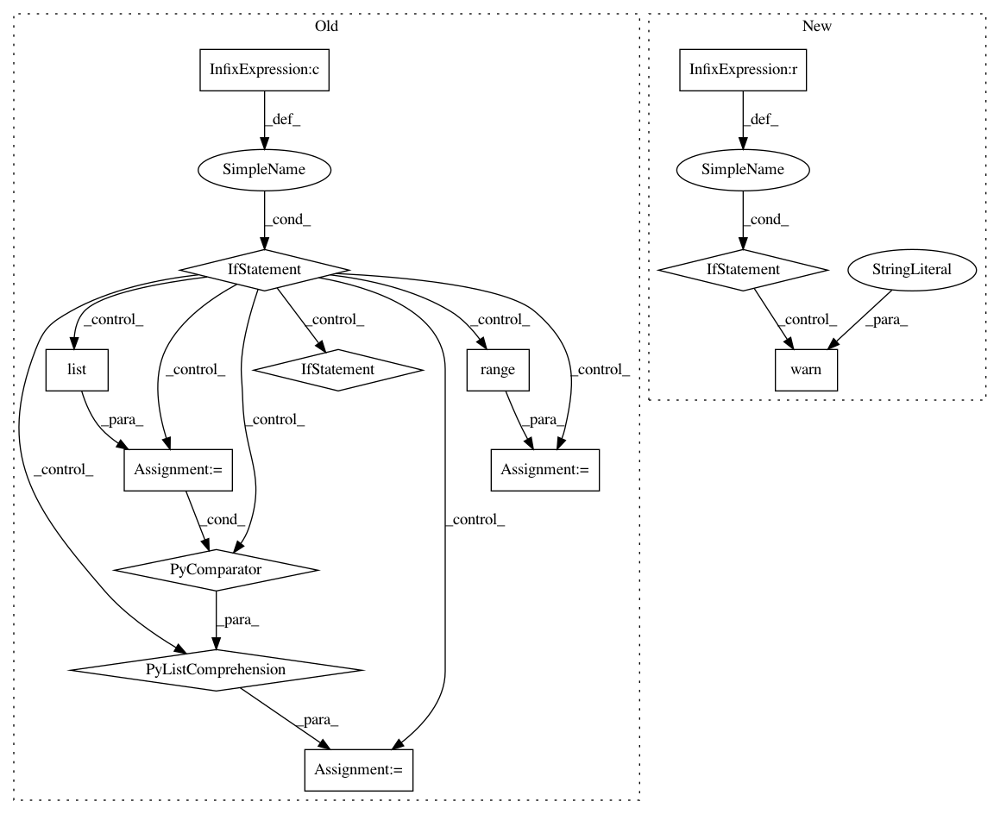

34782d0323d39bd796aebadf53b8a31ed64f7a8d,hypertools/plot/plot.py,,plot,#Any#Any#Any#Any#Any#Any#Any#Any#Any#Any#Any#Any#Any#Any#Any#Any#Any#Any#Any#Any#Any#Any#Any#Any#Any#Any#Any#Any#Any#Any#Any#,22
Before Change
if legend is not None:
if legend is False:
legend = None
elif legend is True and group is not None:
legend = [item for item in sorted(set(group), key=list(group).index)]
elif legend is True and group is None:
legend = [i + 1 for i in range(len(x))]
mpl_kwargs["label"] = legend
// interpolate if its a line plot
After Change
// align data
if align:
if len(data) == 1:
warn("Data in list of length 1 can not be aligned. "
"Skipping the alignment.")
else:
x = aligner(x)
// find cluster and reshape if n_clusters
if n_clusters is not None:
cluster_labels = cluster(x, n_clusters=n_clusters, ndims=ndims)
x = reshape_data(x, cluster_labels)
if group:
In pattern: SUPERPATTERN
Frequency: 3
Non-data size: 13
Instances
Project Name: ContextLab/hypertools
Commit Name: 34782d0323d39bd796aebadf53b8a31ed64f7a8d
Time: 2017-06-04
Author: sucharyan@gmail.com
File Name: hypertools/plot/plot.py
Class Name:
Method Name: plot
Project Name: ContextLab/hypertools
Commit Name: 3b9074719b2c637bdcae9ab6193ad74de14a8121
Time: 2017-06-04
Author: sucharyan@gmail.com
File Name: hypertools/plot/plot.py
Class Name:
Method Name: plot
Project Name: Qiskit/qiskit-aqua
Commit Name: 6b2a79fd202567f1869518efe8b4b68b9d3a3bbf
Time: 2019-08-26
Author: chenrich@us.ibm.com
File Name: qiskit/aqua/translators/ising/vertex_cover.py
Class Name:
Method Name: sample_most_likely